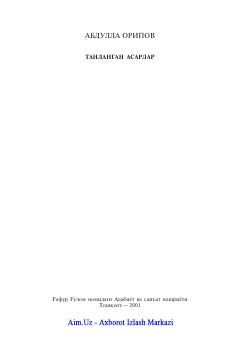

IKInsoniyatning ma'naviy kamoloti haqidagi ulug'vor jahon adabiyoti klassikasi.
Dante Aligeryning jahon adabiyoti durdonasi hisoblangan «Ilohiy komediya» dostoni insoniyatning axloqiy va ma'naviy kamolot yo'lidagi izlanishlarini aks ettiradi. Asar muallifning do'zax, so'ngra jannat va a'rof bo'ylab qilgan xayoliy sayohatini tasvirlaydi.